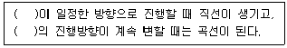

광고도장기능사 (2013-10-12 기출문제)
1과목: 공예디자인
1. 가법혼색에 대한 설명 중 틀린 것은?
- 가법혼색의 대표적인 것은 색광의 혼합이다.
- 가법혼색의 삼원색은 빨강(R), 초록(G), 파랑(B)의 3색이다.
- 가법혼색의 3원색을 모두 혼합하면 검정에 가까운 암회색이 된다.
- 가법혼색의 원리를 응용한 것으로는 상점이나 무대의 조명, 컬러 TV 등이 있다.
(정답률: 알수없음)
2. 디자인 원리 중 둘 이상의 요소 또는 부분이 통일된 전체로서 감각적 효과나 미적 가치를 나타내는 것은?
- 변화
- 조화
- 리듬
- 균형
(정답률: 알수없음)

3. 슈브롤의 조화론에서 동시대비의 원리에 가장 적합한 혼색은?
- 가법혼색
- 감법혼색
- 연속혼색
- 병치혼색
(정답률: 알수없음)
4. 길이, 너비, 깊이, 형태와 공간, 표면, 방위, 위치 등의 특징을 가지는 것은?
- 점
- 선
- 면
- 입체
(정답률: 알수없음)
5. 색의 심리와 상징에 대한 설명이 옳은 것은?
- 녹색 : 유채색 중 채도가 가장 높은 색으로 명량, 생동감, 즐거움 등의 느낌을 준다. 부와 권위, 풍요로움을 나타내기도 한다.
- 주황 : 시각적으로 따뜻한 느낌을 주는 난색으로 약동, 활력, 만족, 적극 등을 상징한다. 식욕을 증진시키는 역할을 하기도 한다.
- 파랑 : 우아함, 화려함, 풍부함, 고독 등 다양한 느낌을 갖고 있다. 예로부터 왕실의 색으로 품위 있는 고상함과 함께 외로움과 슬픔을 느끼게 한다.
- 보라 : 평화, 안전, 휴식 등을 상징하고 있다. 중성색에 속하므로 강렬한 느낌보다는 중성적인 느낌을 가지게 되므로 친근한 색으로 전개될 수 있다.
(정답률: 알수없음)
6. 외형선을 처리하는데 적합한 선의 종류는?
- 굵은 실선
- 가는 실선
- 가는 일점 쇄선
- 가는 이점 쇄선
(정답률: 알수없음)
7. 자연계의 불가사리나 무궁화 꽃이 나타내는 대칭은?
- 좌우대칭
- 방사대칭
- 비대칭
- 균형대칭
(정답률: 알수없음)
8. 보기의 ( ) 안에 공통으로 들어갈 디자인 요소는?

- 점
- 선
- 면
- 형
(정답률: 알수없음)
9. 다음 중 기능주의 디자인과 관련이 없는 것은?
- 기능주의 디자인의 기본전제는 기능과 미, 또는 기능과 형태가 일치한다는 것이다.
- 루이스 설리번의 “형태는 기능을 따른다.”는 기능주의 디자인의 대표적인 명제이다.
- 과거의 양식을 모방하거나 일정하게 재해석하는 경향의 특징이 있다.
- 근대 건축과 근대 디자인의 기본적인 조형원리이다.
(정답률: 알수없음)
10. 척도에 대한 설명이 틀린 것은?
- 척도는 어느 것을 사용하더라도 도면에는 실제의 치수를 기입한다.
- 한 도면에 하나 이상의 척도를 사용할 때 표제란에 사용된 모든 척도를 기입한다.
- 척도는 실척(full scale), 축척(contraction scale), 배척(enlarged scale)으로 구분한다.
- 도형의 치수에 비례하지 않을 경우에는 '비례척이 아님' 혹은 치수 앞에 NS(no scale)로 기입한다.
(정답률: 알수없음)
11. 다음 중 계통색명에 표기되는 속성이 아닌 것은?
- 색상에 관한 수식어
- 명도에 관한 수식어
- 채도에 관한 수식어
- 유래에 관한 수식어
(정답률: 알수없음)
12. 색은 파장에 따라 다른 감정을 느끼게 한다. 장파장의 색이 갖는 감정효과가 아닌 것은?
- 후퇴되어 보인다.
- 흥분효과가 있다.
- 팽창되어 보인다.
- 따뜻하게 느껴진다.
(정답률: 알수없음)
13. 동일한 색상을 톤의 차이를 이용해 5색 배색을 하였다. 이에 해당하는 배색 방법은?
- 톤인톤 배색
- 도미넌트 배색
- 톤온톤 배색
- 트리콜로 배색
(정답률: 알수없음)
14. 다음 중 시장성 위주의 기술개발, 전자산업, 수출중심의 디자인 정책을 펼쳐 디자인을 성장시킨 국가는?
- 미국
- 중국
- 일본
- 덴마크
(정답률: 알수없음)
15. 700nm 파장의 가시광선은 무슨 색으로 지각되는가?
- 빨강
- 주황
- 노랑
- 초록
(정답률: 알수없음)
16. 우리나라 시대별 디자인 목표의 변화에 대한 설명이 틀린 것은?
- 1980년대의 목표는 지속가능한 디자인, 융합의 디자인 시대이다.
- 1990년대는 디지털-고도기술화를 바탕으로 한 혁신의 시대이다.
- 2000년대는 하이테크의 기술력과 하이터치의 감성이 어우러진 컨버전스 또는 융합의 시대이다.
- 2000년대는 전 세계를 대상으로 하는 제품의 생산과 판매, 이미지와 상표가치, 환경보존가치에 비중을 두게 되었다.
(정답률: 알수없음)
17. 자간에 대한 설명이 틀린 것은?
- 한글은 커닝 조절이 불가능하다.
- 영문은 커닝 조절이 가능하다.
- 당기기 자간은 책자나 장문의 본문에 주로 적용된다.
- 당기기 자간은 부호없이 양수값으로, 벌리기 자간은 음수값으로 표기한다.
(정답률: 알수없음)
18. 한국의 전통 오방색에 의한 색채의 표현으로 볼 수 없는 것은?
- 단청
- 짚신
- 구절판
- 조각보
(정답률: 알수없음)
19. 다음 중 감법혼합에 해당하는 것은?
- 젤라틴 필터
- 프로젝터
- 컬러영화필름
- 무대조명장치
(정답률: 알수없음)
20. 1989년에 개발되어 광고 제목 글자들의 레터링 작업을 손쉽고 빠른 식자 작업으로 대신하도록 한 서체는?
- 궁서체
- 헤드라인체
- 나루체
- 그래픽체
(정답률: 알수없음)
2과목: 광고도장재료
21. 투상선이 투상면에 대하여 수직으로 투상되는 것으로 정면도, 평면도, 측면도 등으로 나타내는 방법은?
- 사투상
- 등각투상
- 정투상
- 부등각투상
(정답률: 알수없음)
22. 우리 눈에 지각되는 색상을 결정하는 요소는?
- 파장의 길이
- 파장의 진폭
- 흡수
- 산란
(정답률: 알수없음)
23. 기능에 따른 도시의 분류 중 비슷하게 분류되지 않은 도시는?
- 경주
- 전주
- 부여
- 포항
(정답률: 알수없음)
24. 금속재 입체 광고면을 제작할 때 부식을 방지하기 위한 방법과 가장 거리가 먼 것은?
- 다른 종류의 금속을 서로 잇대어 쓴다.
- 균질의 재료를 쓴다.
- 표면은 물기나 습기가 없도록 하고 깨끗하게 한다.
- 도료나 내식성이 큰 금속으로 표면에 피막을 만들어 보호한다.
(정답률: 알수없음)
25. 해상도에 관한 설명 중 옳은 것은?
- 해상도가 높을수록 이미지의 양과 질은 떨어진다.
- 해상도는 벡터보다는 비트맵이 높다.
- 곡선보다 직선 형태에서 계단 모양의 픽셀이 강하가 나타난다.
- 2D 면적 단위에 포함되는 픽셀의 수이다.
(정답률: 알수없음)
26. 컬러모드에 대한 설명이 틀린 것은?
- RGB 데이터를 CMYK 데이터로 변환하면 색이 어두워 보인다.
- 그레이스케일 이미지를 RGB 이미지로 변환하면 각 픽셀의 색상값은 이전의 회색값에 기반한다.
- 그레이스케일 모드 색상은 색의 밝기 정보만 가지고 있어 이미지가 흑백 사진과 같다.
- 인덱스 컬러모드로 된 이미지는 픽셀 심도가 1이기 때문에 1비트의 비트맵 이미지라고도 한다.
(정답률: 알수없음)
27. 중앙처리장치(CPU)에 대한 설명으로 틀린 것은?
- 자료를 입력 받아 산술 연산 작용을 수행한다.
- 모든 장치들을 감시, 감독, 통제, 해독하는 핵심적인 기능을 수행한다.
- 현재 수행중인 명령은 레지스터에 보관한다.
- CPU는 메인보드에 장착하고 슬롯을 통하여 메모리나 주변장치와 데이터를 주고받는다.
(정답률: 알수없음)
28. 옥외광고의 일반적 특성에 대한 설명으로 틀린 것은?
- 소재 표시성 : 옥외광고는 오랜 역사를 지닌 광고매체로서 원래 소재 표시를 하기 위한 기능에서 출발하였다.
- 반복 소구성 : 일정 장소에 고정되어 비교적 장기간에 걸쳐 동일한 메시지를 지속적으로 게재하기 때문에 반복소구에 의한 효과가 크다.
- 인지성 : 특정 지역에 고정되어 반복적으로 노출되기 때문에 기업이나 브랜드에 대한 인상을 강하게 하여 좋은 이미지를 형성하는데 효과적이다.
- 고정성·상징성 : 옥외광고를 특정 지역에 게시하면 그 장소에 모이거나 통행하는 사람 등 특정 지역 관계자를 대상으로 소구할 수 없다.
(정답률: 알수없음)
29. 다음 중 컬러모드에 대한 설명이 틀린 것은?
- HSB 모드 : 색상은 360°의 단게로 표현된다.
- RGB 모드 : 인쇄의 3속성인 Red, Yellow, Blue의 혼합으로 표현한다.
- Lab 모드 : L은 명도이며, L의 범위는 0~100 이다.
- CMYK : Cyan, Magenta, Yellow, Black을 기본으로 한다.
(정답률: 알수없음)
30. 옥외광고물의 설치 위치에 따른 분류가 틀린 것은?
- 창문 - 창문이용광고물
- 대지 – 돌출 광고물
- 건물옥상 - 옥상광고물
- 건물벽면 – 가로·세로형 광고물
(정답률: 알수없음)
31. 옥외광고물 등 관리법 시행령에 의거, 광고물의 안전점검을 받아야 하는 경우에 해당되지 않는 것은?
- 광고물을 최초로 표시한 경우
- 광고물의 규격·사용자재·위치 또는 장소를 변경한 경우
- 광고물을 철거하는 경우
- 허가받거나 신고한 표시기간을 연정 받으려는 경우
(정답률: 알수없음)
32. 다음 중 앤티크 도장 방법에 적합하지 않은 수종은?
- 졸참나무
- 마호가니
- 너도밤나무
- 소나무
(정답률: 알수없음)
33. 다음 중 옥외광고물 등 관리법 시행령에 의한 옥상간판의 표시방법에 대한 설명이 틀린 것은?
- 특별시의 경우는 5층 이상 15층 이하의 건물에 표시할 수 있다.
- 간판의 높이는 15미터 이내로 하되, 건물 높이의 2분의 1을 초과해서는 아니 된다.
- 시, 군의 경우는 3층 이상 15층 이하의 건물에 표시할 수 있다.
- 간판의 가장 넓은 면 또는 단면의 최대 길이는 30미터 이내여야 한다.
(정답률: 알수없음)
34. 미국 픽사(pixar)에서 만든 전문 3D 그래픽 모델링(Modeling)과 렌더링(Rendering)을 지원하는 그래픽 프로그램은?
- 라이트웨이브(Lightwave) 3D
- 렌더맨(RenderMan)
- 소프트이미지(Softimage)
- 가상현실(Virtual Reality)
(정답률: 알수없음)
35. 상품수명주기별 분류에 해당하지 않는 광고는?
- 성장기 광고
- 정체기 광고
- 성숙기 광고
- 쇠퇴기 광고
(정답률: 알수없음)
36. 다음 중 일러스트레이터에서 작성한 파일을 포토샵이나 인디자인으로 가져가려고 할 때, 적합한 저장 방식은?
- PSD
- FLA
- SWF
- EPS
(정답률: 알수없음)
37. 넓은 피도장물을 도장할 수 있는 롤로 브러시의 단점이 아닌 것은?
- 기구의 형태가 크고 무겁다.
- 회전속도를 빠르게 하면 도료가 날린다.
- 작업자가 쉽게 피로해지고, 손질 및 보관이 어렵다.
- 위험한 부분이나 높은 부분의 도장에 부적합하다.
(정답률: 알수없음)
38. 도시경관에서 '기능공관'을 만드는 옥외광고의 목적에 대한 설명으로 가장 옳은 것은?
- 광고물은 건물의 경제적 가치효과를 높이기 위한 목적으로 설치되어야 한다.
- 광고물의 목적달성을 위한 독자성을 추구하는 쪽에서 설치되어야 한다.
- 광고물의 목적추구를 위해 광고가 갖는 지식정보가 가장 중시되어 전달되어야 한다.
- 광고물이 속해있는 경관이 쾌적함을 주는 가치판단 기준에 합당하게 설치되어야 한다.
(정답률: 알수없음)
39. 옥외광고의 정의로 틀린 것은?
- 단기계약으로 지속적 광고보다는 단발적인 광고가 효과적이다.
- 공중이 자유로이 통행할 수 있는 장소에 설치되는 광고물이다.
- 일정 공간을 점유하여 불특정 다수인에게 시각적인 자극을 주는 광고이다.
- 일정한 규격과 디자인, 광고판의 구성에 부합되어진 것이다.
(정답률: 알수없음)
40. 공공표지판 사인을 만들기 위해 고려할 사항에 대한 설명이 틀린 것은?
- 사용되는 문구는 누구나 알아보기 쉬워야 한다.
- 보는 사람이 거부감을 일으키지 않으며 가능한 한 긍정적인 것이어야 한다.
- 쓰이는 문구는 확실한 사실에 근거해야 한다.
- 복잡하고 상세한 문구로 표현하여야 한다.
(정답률: 알수없음)
3과목: 광고도장
41. 도심 시가지 사인 계획의 설명 중 가장 옳은 것은?
- 차별화된 색상으로 사람들의 시선은 강하게 유도할 것
- 지역의 특성이나 환경과의 연속성을 고려할 것
- 독자적으로 가장 눈에 띄는 주목 효과를 연출할 것
- 광고주의 개성적인 매력을 연출할 것
(정답률: 알수없음)
42. 다음 중 일반적으로 “4P”라고 불리는 마케팅 믹스의 4요소가 아닌 것은?
- 가격
- 광고
- 제품
- 유통
(정답률: 알수없음)
43. 광고는 광고매체에 따라 구분할 수 있는데, 다음 중 전통적인 광고 4대 매체에 속하지 않는 것은?
- 신문광고
- 텔레비젼광고
- 옥외광고
- 잡지광고
(정답률: 알수없음)
44. 옥외광고물을 계획할 때 먼저 고려할 사항은 위치선정이다. 이때 검토해야할 가장 중요한 요소는?
- 건물 규모
- 주변 환경
- 벽면 마감재
- 통행량
(정답률: 알수없음)
45. 다음 중 컴퓨터 애니메이션의 제작과정중에서 가장 먼저 해야 할 작업은?
- 레코딩
- 기획
- 스토리보드
- 제작
(정답률: 알수없음)
46. 옥외광고의 종류 중 의미가 틀린 것은?
- 현수막 : 천, 종이, 비닐 등에 문자, 도형 등을 표시하여 건물 등의 벽면, 지주, 게시시설에 매달아 표시하는 광고
- 애드벌룬 : 차량이나 나무에 설치하거나 도로바닥에 부착하는 광고
- 선전탑 : 도로 등 일정한 장소에 광고탑을 설치하여 탑면에 문자, 도형 등을 표시하는 광고
- 벽보 : 지정 게시판, 지정 벽보판 또는 기타 시설물 등에 부착하는 광고
(정답률: 알수없음)
47. 고무계 접착제 중 아라비아 고무에 대한 설명으로 틀린 것은?
- 물에는 녹지만 알코올에는 녹지 않는다.
- 습기에 매우 강하다.
- 수온에 따라 접착력이 변화한다.
- 아카시아과 수목의 줄기에서 채취한 액체를 가공한 것이다.
(정답률: 알수없음)
48. 합판에 대한 설명 중 틀린 것은?
- 합판의 원료로는 침엽수, 활엽수는 물론 대나무까지도 이용된다.
- 합판을 보관할 때는 수직으로 하고, 좌우로 2개의 받침목을 사용하여야 한다.
- 합판은 강도가 크고, 비틀림과 갈라짐, 수축과 팽창 등이 거의 없다.
- 합판은 내수합판, 준내수합판, 비내수합판 등이 있는데, 이것은 사용하는 수종과 접착제에 따라 구분된다.
(정답률: 알수없음)
49. 상온에서 사용할 수 있으며 접착력이 강하고 내수성, 내산성, 내열성 등이 우수하여 합성수지, 유리, 목재, 천, 콘크리트, 항공기, 기계부품의 접착에 이용되는 것은?
- 규소 수지 접착제
- 에폭시 수지 접착제
- 요소 수지 접착제
- 멜라민 수지 접착제
(정답률: 알수없음)
50. 상대습도가 90% 이상의 습기 중에서도 사용될 수 있어 욕실, 실내풀장 등에 사용되는 조명기구는?
- 방수형 조명기구
- 방습형 조명기구
- 방폭형 조명기구
- 내약품성 조명기구
(정답률: 알수없음)
51. 다음 중 금속의 비중이 큰 순서대로 옳게 나열된 것은?
- 은 ＞ 구리 ＞ 아연 ＞ 알루미늄
- 구리 ＞ 은 ＞ 아연 ＞ 알루미늄
- 아연 ＞ 은 ＞ 구리 ＞ 알루미늄
- 은 ＞ 아연 ＞ 구리 ＞ 알루미늄
(정답률: 알수없음)
52. 다음 중 비철금속이 아닌 것은?
- 구리(Cu)
- 철(Fe)
- 니켈(Ni)
- 아연(Zn)
(정답률: 알수없음)
53. 재료와 접착제가 잘못 연결된 것은?
- 유리 : 에폭시 수지 접착제
- 목재 : 멜라민 수지 접착제
- 합판 : 페놀 수지 접착제
- 가죽 : 실리콘 수지 접착제
(정답률: 알수없음)
54. 금속재료 중 동에 대한 설명으로 틀린 것은?
- 전기 및 열의 양도체이다.
- 부식이 잘 되지 않는다.
- 전성과 연성이 비교적 적어 가공하기 어렵다.
- 아연, 주석 등과 합금하면 귀금속적 성질을 갖는다.
(정답률: 알수없음)
55. 수용성 페인트의 특성이 아닌 것은?
- 유기용제가 함유되어 있다.
- 희석제 물을 사용한다.
- 재도장 시간을 단축시킬 수 있다.
- 취급이 간단하고 작업성이 좋다.
(정답률: 알수없음)
56. 메타크릴 수지에 대한 설명으로 틀린 것은?
- 성형성과 기계적 가공성이 좋다.
- 채광판, 조명 등의 용도로도 사용된다.
- 다시 가열해도 변하지 않는 열경화성 수지이다.
- 유기유리라고 부르며 착색이 자유롭다.
(정답률: 알수없음)
57. 플라스틱의 특성이 아닌 것은?
- 치수 정밀성, 내구성이 좋다.
- 대량생산에 적합하다.
- 착색과 질감표현이 우수하다.
- 열이나 충격에 강하다.
(정답률: 알수없음)
58. 다음 중 투명성이 가장 좋은 수지는?
- ABS
- 염화비닐
- PP
- 아크릴
(정답률: 알수없음)
59. 다음 중 충격강도, 인장강도 등 기계적 강도가 뛰어나며 주로 외장용 패널, 덕트, 선체, 탱크 등 목재에서 경량강에 이르기까지 대체재로 활용되는 것은?
- 포틀랜드 시멘트
- 유리섬유 강화 시멘트
- 알루미나 시멘트
- 실리카 시멘트
(정답률: 알수없음)
60. 광고 전단지를 제작하기에 가장 적절한 종이는?
- 아트지(Art paper)
- 아이보리 판지(Ivory Board)
- 크라프트지(Craft paper)
- 라이너보드(Liner Board)
(정답률: 알수없음)